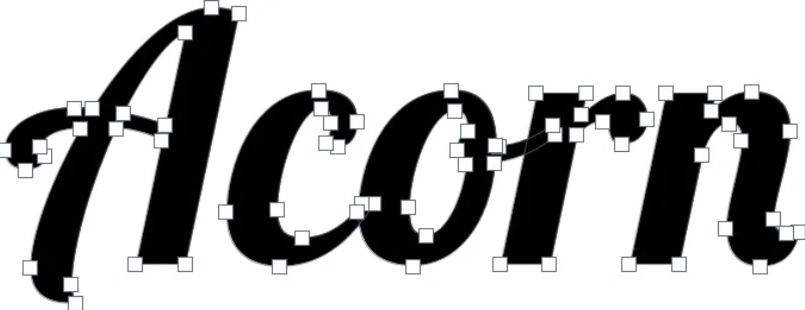

The core problem our project aims to address is how to efficiently and accurately rasterize these Bézier-based glyphs into filled pixel representations using only CPU-based techniques. This involves interpreting curve data from font files, converting continuous vector shapes into discrete pixel grids, and ensuring that the resulting text appears smooth and legible. A key challenge lies in implementing a robust scanline rasterization algorithm that correctly fills complex shapes, including handling edge cases such as overlapping contours and sharp curve transitions. Additionally, achieving high-quality anti-aliasing is essential to avoid jagged edges, especially at smaller font sizes so that readability can be improved.
We implement a custom Bézier curve rasterizer from scratch, using scanline techniques to convert outlines into filled pixel bitmaps. Anti-aliasing methods will be incorporated to improve visual quality, which will result in a system capable of rendering scalable, high-fidelity text, including complex custom fonts and non-Latin based languages.

Week 1: Researching existing literature and understanding the problem further. Set up the project environment and integrate a font parsing library (FreeType, for example) to load .ttf and .otf files. Extract outlines as Bezier control points for a basic set of characters. Visualize control points to confirm we correctly parsed the files
Week 2: First half of the rasterizer implementation. Build the scanline fill algorithm to correctly rasterize filled character shapes. Test on simple characters like O, H, L, etc. to confirm correctness, including compound outlines like i.
Week 3: Add supersampled anti-aliasing to smooth glyph edges at small sizes. Implement layout considerations so that full words and sentences can be rendered. Begin testing with longer strings and confirm performance
Week 4: Attempt to create custom fonts or non-Latin characters and validate that the rasterizer handles more complex outlines correctly. Finalize the demo, clean up the code, and prepare the presentation showcasing Latin and kanji renders at multiple sizes.
We will use FreeType to load TrueType .tff or OpenType .otf files. We will also refer to the following resources:
Bézier Curves and type Design: a tutorial | Learn – Scannerlicker! (2014, April 16). https://learn.scannerlicker.net/2014/04/16/bezier-curves-and-type-design-a-tutorial/
Hersch, R. D. (1994). Font Rasterization: The State of the Art. Cambridge University Press, 274–296. https://doi.org/10.1007/978-3-642-78291-6_9
The Mathematics behind Font Shapes --- Bézier Curves and More. (2022, February 27). Jdhao’s Digital Space. https://jdhao.github.io/2018/11/27/font_shape_mathematics_bezier_curves/